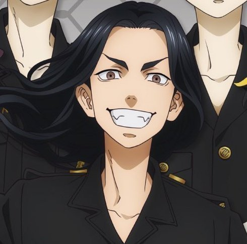

Baji Keisuke was the First Division Captain of Tokyo Manji Gang.
Baji Keisuke was one of the founding members of Toman and also the First Division captain of the gang. Find out more about Baji here
Some of baji's friends were: Manjiro Sano A.K.A Mikey, Chifuyu Matsuno, Dranken A.K.A Ken Ryuguji, Kazutora Hanemiya. Find out more about them here:
MikeyBaji Keisuke died on the Bloody Halloween by stabbing himself. While dying, He revealed to takemichi and chifuyu that the real Enemy is Kisaki Tetta.
His last words were:
"Pah-chin, Mitsuya, Draken, Mikey, Kazutora. Toman's founding members are my treasure. I wanted to fix this on my own. But, I just couldn't. I died on my own."